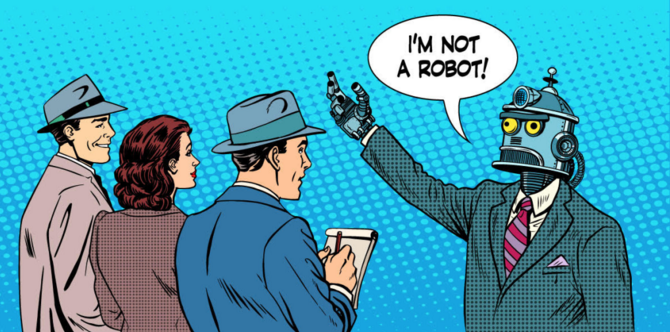

Botchat: iniziamo a conversare con le macchine digitali?

La parola magica “botchat” è già emersa in USA e dal 24 giugno 2016, appare anche in Italia grazie a Giorgio Robino, al suo lavoro di designer e softwarista di chat bot…ma che cosa significa chat bot? Uso le parole di Giorgio: “ “Un chatbot è qualsiasi software che dialoga in linguaggio naturale”. Potete approfondire leggendo il suo articolo qui e accedere alle slide proiettate nel convegno del 24 giugno, attraverso il servizio di slideshare a questo indirizzo: http://www.slideshare.net/convcomp2016/presentations
Potete anche guardare lo streaming del convegno qui:
– mattino: https://www.youtube.com/watch?v=YtXwry-yojI
– pomeriggio: https://www.youtube.com/watch?v=LGjyclQA8Go
I chatbot sono apparsi nel mondo degli smart phone con l’applicazione SIRI di Apple, ma il loro sviluppo ha radici più indietro nel tempo. Oggi l’area che sembra di maggiore sviluppo è quella commerciale, ove il contesto è abbastanza ben definito ed è semplice. Le possibilità applicative sono infinite. Ma non dobbiamo sottovalutarne la complessità. I chatbot mettono in priorità il LINGUAGGIO come interfaccia primaria e prioritaria nella comunicazione tra umani e macchine digitali. Il linguaggio è sinonimo di intelligenza e lo sanno bene gli psicologi cognitivi. Quando affrontiamo l’interfaccia con le macchine appaiono le sfide come ad esempio:
- la comprensione del linguaggio naturale, ossia l’estrazione dei significati, che quasi sempre devono essere contestualizzati;
- il riconoscimento della voce umana da parte delle macchine digitali, campo nel quale i progressi sono stati straordinari, ma ancora con alcuni problemi;
- la preparazione di risposte pertinenti alle domande che in alcuni contesti, come nel caso della compravendita, sono semplificati per la natura stessa della conversazione, che è finalizzata.
Auguri quindi ai tecnologi, ma anche a designer di software, a scrittori, a sceneggiatori, a narratori che vorranno cimentarsi in questo settore applicativo che chiede a gran voce soluzioni a problemi piccoli ma diffusi. C’è anche una massa di persone poco “digitali” che attende con grandi speranze queste nuove applicazioni di dialogo con le macchine digitali!
Originally published at www.innovitaly.eu on May 5, 2016.